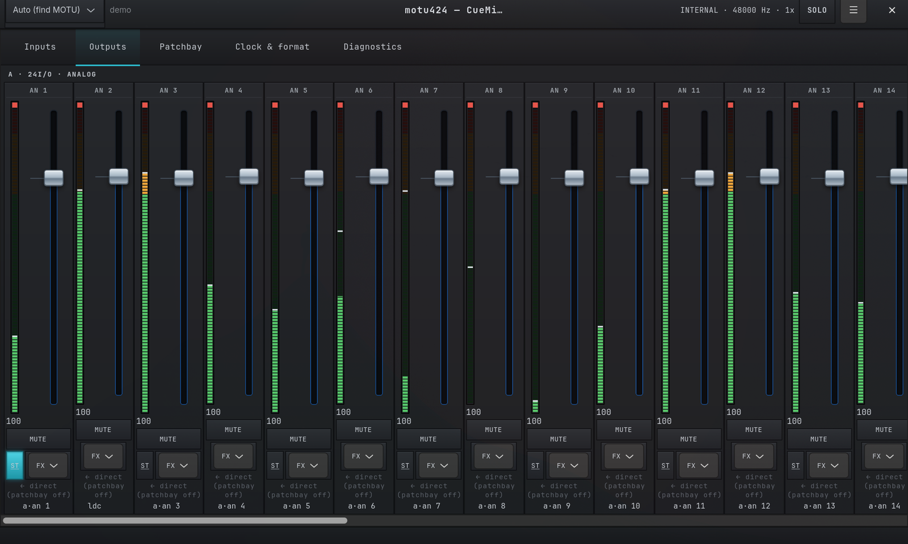
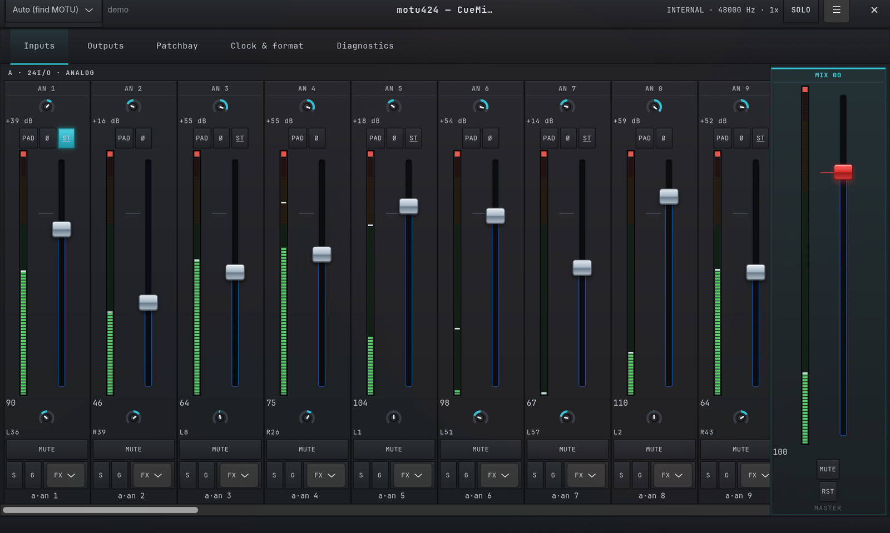
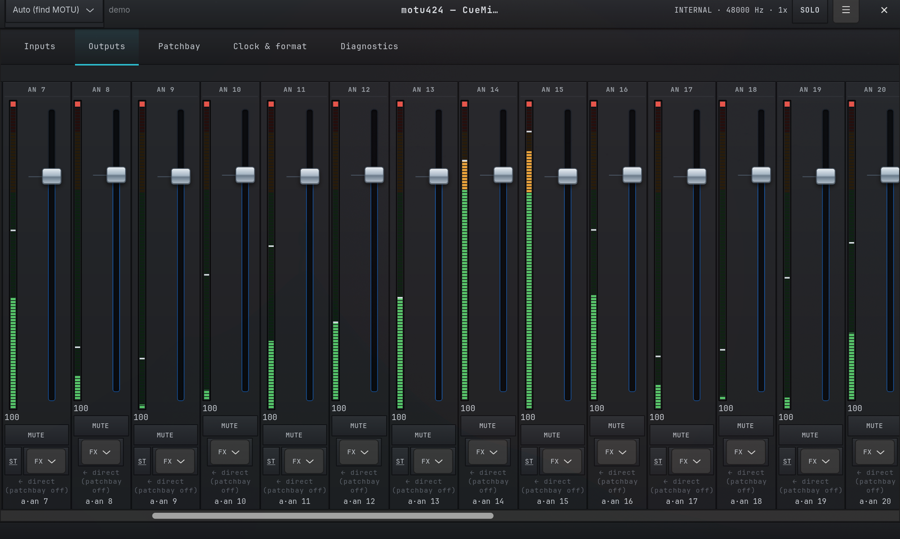
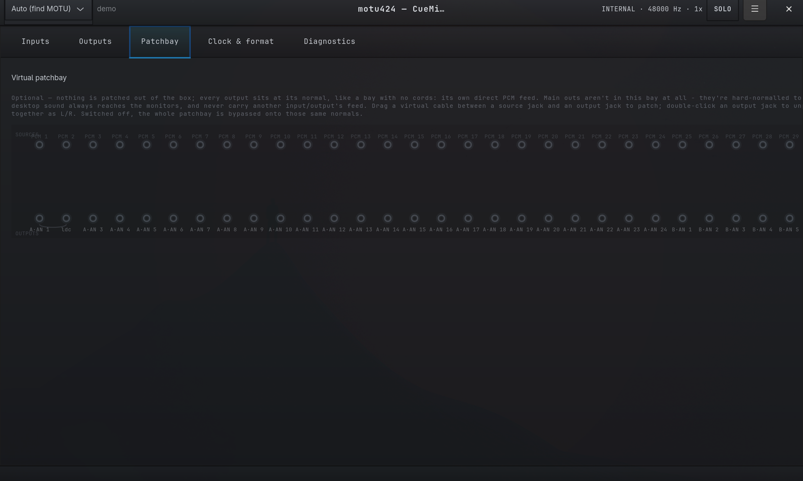
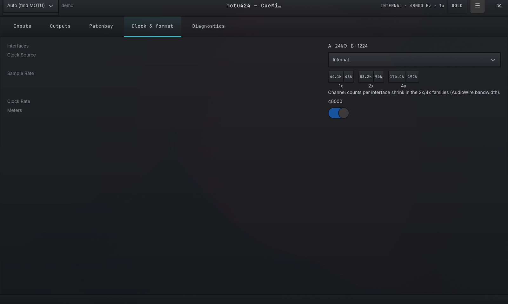
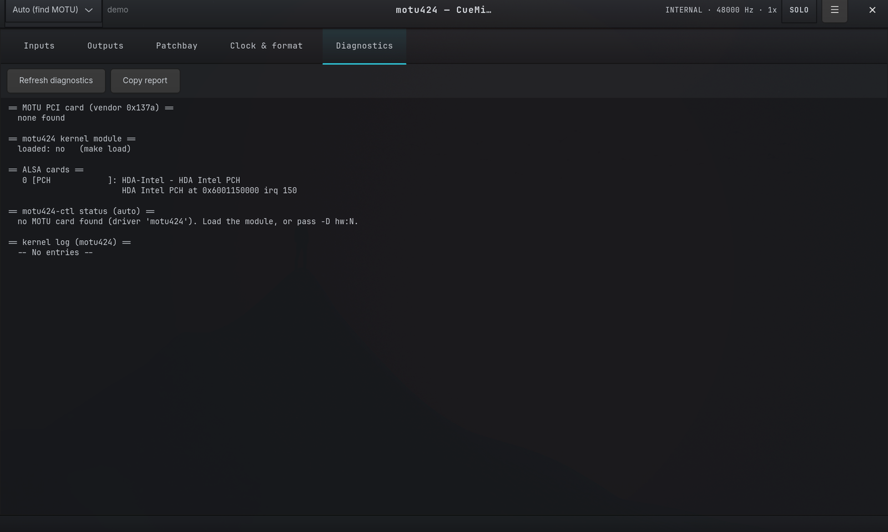

MOTU PCI‑324 / PCI‑424, rebuilt for Linux.
A from-scratch ALSA kernel driver, a CueMix-style control app (CLI + GTK), and a clean-room reverse-engineering of a sound card the vendor never documented.

curl -fsSL https://raw.githubusercontent.com/devfrp/Linux-motu-pci-424/main/get.sh | sh
AudioWire host card, out-of-tree Linux driver. Source
An undocumented card, brought up in the open
The PCI-324/424 is a host card for MOTU AudioWire interfaces: the 2408, 24I/O, 828, HD192, 896HD and friends. There is no vendor documentation, so the register map and transport are recovered from the Windows driver and the card’s own DSP program, and checked on a real PCI-424: the card now boots under Linux. The PCI, DMA, IRQ and ALSA plumbing is in place; everything still uncertain is confined to two files, so confirmed facts land in exactly one place.
- Channel 1
- 24-bit / 3 bytes
- Rate families
- 1× / 2× / 4×
- Interfaces
- 2408, 24I/O, 828, HD192, 896HD
- Status
- boots under Linux
What ships
A driver, two control apps, and an installer that works on any distribution.
ALSA module
KernelClean three-layer split, fully devm/pcim-managed, DKMS-packaged so it rebuilds itself across kernel upgrades.
Control, CLImotu424-ctlThe Linux CueMix FX over alsa-lib: clock source, sample rate, per-input trim/pad/phase, and the input×bus monitor matrix.
Control, GUImotu424-guiA GTK4 CueMix-style mixing console: channel strips with faders, peak-hold meters and rotary pan pots, snapshots, undo, a virtual FX insert preview, previewable card-less with --demo.
Any distro
InstallDetects pacman/apt/dnf/zypper/apk/xbps, pulls deps, installs via DKMS. Non-interactive under curl | sh.
Clean-room RE
ToolkitA capstone cross-referencer and a C++ vtable resolver; every recovered fact is written down with its evidence.
Facts-only, GPL
LicenseOnly offsets, formats and sequences enter the GPL-2.0 sources. Vendor binaries are never redistributed.
The console, tab by tab
motu424-gui in demo mode, as it runs without a card.





What the reverse-engineering pinned
Recovered from the vendor Windows driver with objdump, a capstone cross-referencer and the rz-ghidra decompiler, from the card’s C64x DSP program, and checked on a real PCI-424.
| Finding | Value | State |
|---|---|---|
| The boarda TI TMS320C6412 DSP in PCI boot mode: window A = its peripheral registers, window B = its memory, I/O BAR = its host port | & 0xff800000 | Confirmed |
| Interrupt paththe DSP raises INTREQ; pending = HSR bit 1, ack = INTRST in RSTSRC | 0x10 → 0x01c00000 | Confirmed |
| TransportDSP bus-master DMA from a host ring; the DSP reports the bus address it has reached | ring → +0x5c | Confirmed |
| Bring-upDSPINT releases the loaded program, which publishes its audio block in the mailbox (run on a real card) | 0x3fffc → 0x6fac | Confirmed |
| Breakout channel mapcounts are a runtime descriptor blob from the attached interface, not a static table | runtime descriptor | Confirmed |
| Device object modelaudio object is a global singleton; windowed-MMIO manager + DMA common-buffer sub-objects | A @ 0x61f50 | Confirmed |
| FPGA firmwareno PROM: the host clocks the image out through the DSP’s GPIO, then loads the DSP program (run on a real card) | request_firmware | Confirmed |
| CueMix mixer sinkcoefficients flushed by dirty range to a card-reported base | [dev + 0x9c] | Confirmed |
| Rate parameter & clock-source selectinterface/card-bound: the last values need a card to observe | base + 0x64 | Card |
Signal path
The PCI and PCM layers stay hardware-agnostic; every register offset and encoding lives only in the bottom node.
motu424_main.cPCI attach, BAR map, IRQ vector, ALSA card create. The interrupt calls motu424_hw_irq_ack().
motu424_pcm.cALSA PCM ops: translates open/prepare/trigger/pointer into motu424_hw_* calls.
motu424_hw.cRegisters, clock/rate, DMA ring, IRQ ack. The hardware truth lives here.
Install
The one-liner fetches the sources and runs the installer: dependencies, DKMS module, tools. Add --gui for the graphical panel.
# deps + DKMS module + tools + load curl -fsSL https://raw.githubusercontent.com/devfrp/Linux-motu-pci-424/main/get.sh | sh # with the GTK GUI curl -fsSL …/get.sh | sh -s -- --gui
git clone https://github.com/devfrp/Linux-motu-pci-424 cd motu-pci-424 ./install.sh # or: make && make load motu424-ctl # CueMix status (CLI) motu424-gui # graphical panel
Where it stands
The card boots under Linux. What remains is the format of the audio on the host ring, then playback, capture and rate changes on a real card.
- Done
Framework & tooling
PCI/DMA/IRQ/ALSA scaffolding, cross-distro installer, CLI + GUI, RE toolchain.
- Done
Register, IRQ & transport model
DSP windows, IRQ ack, bus-master ring, the full IOCTL interface.
- Done
Firmware load on a real card
FPGA image and DSP program loaded, audio block published; the driver now does it with request_firmware().
- Done
Device model & bring-up path
The whole device-extension struct, the audio object & sub-objects, and the handshake that publishes the runtime audio base.
- Partial
Clock & rate encoding
Rate families, enable and increment recovered; clock-source select and the rate parameter are interface-bound, their values need a card.
- Needs card
First sound & validation
Frame layout on the ring, playback/capture at every rate, the CueMix mixer, soak tests: the last mile to sound.